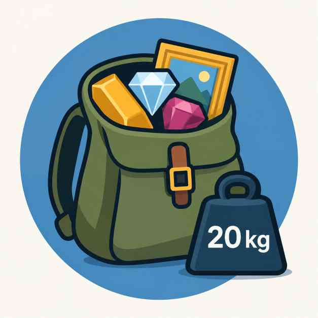

Elegimos objetos para maximizar el valor dentro de la mochila.

Un contrabandista tiene una mochila con una capacidad máxima de 20 kg y una oportunidad para llevarse mercancía valiosa de un almacén. Puede elegir los objetos que quiera, pero solo puede llevarse una unidad de cada uno.
ObjetoPesoValorLingote de oro5 kg650 €Diamante3 kg400 €Collar de esmeraldas4 kg500 €Cuadro robado7 kg800 €Bolsa de monedas antiguas6 kg450 €Rubí gigante2 kg250 €Escultura de plata8 kg700 €El reto
¿Qué objetos debería elegir para conseguir el mayor valor posible sin superar los 20 kg?
Buscad distintas combinaciones, calculad el peso y el valor de cada una e intentad mejorar las propuestas de los demás grupos.
¿Cómo podéis demostrar que vuestra solución es la mejor?